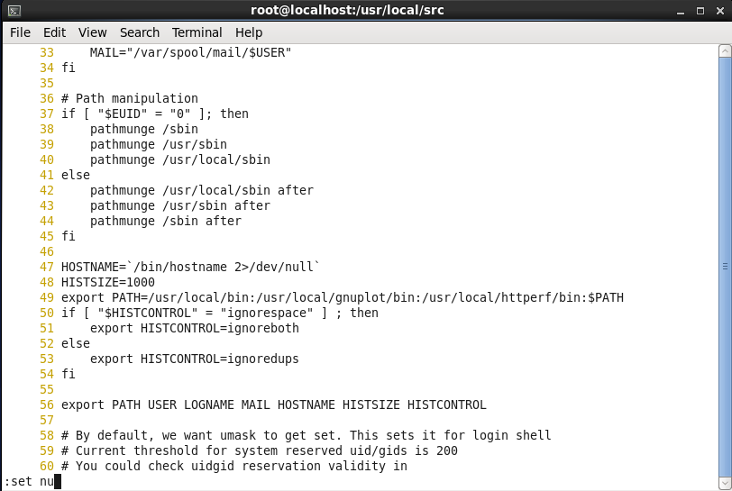
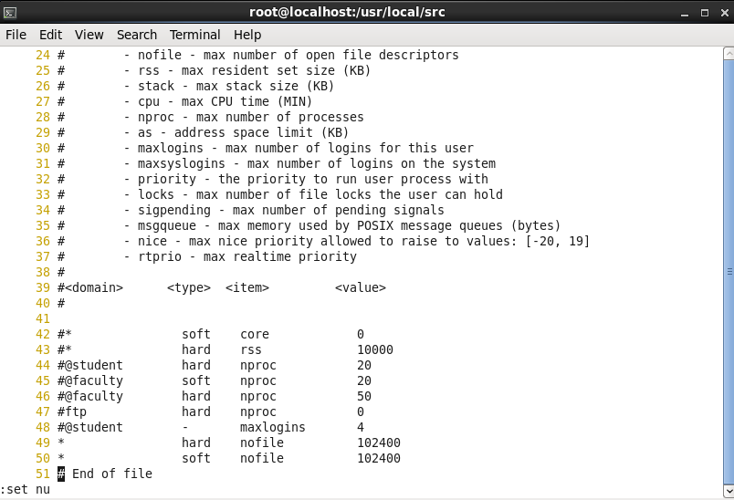
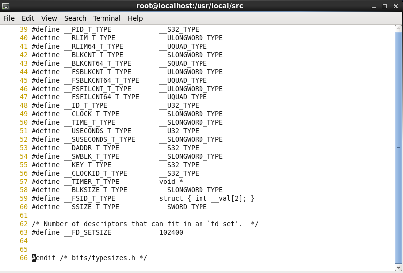
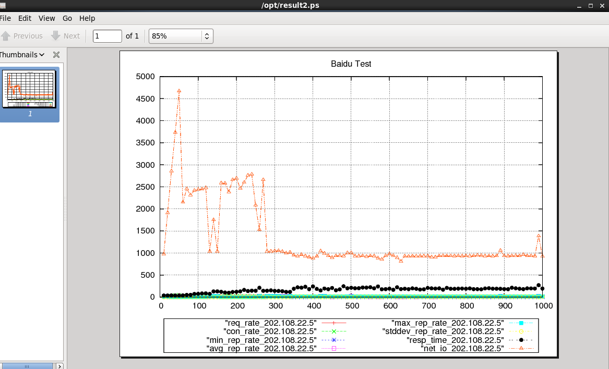

httperf学习笔记（CentOS-6.6环境下安装配置）
新工作已经找到了，最近在忙着熟悉环境，昨天领导让我接触下httperf压力测试工具
百度了下，相关的文档，准备着手配置一个测试环境基于linux系统httperf+autobench+gnuplot，
httperf可支持单独使用，autobench是基于httperf的Perl脚本，保存测试结果生成文件，gnuplot可以对生成的文件转化成易于观察的图形文件
首先当然是新建一个linux的虚拟机
博主这里使用的是CentOS-6.6-64位系统
因为是安装配置都是源码编译，先行安装编译环境
yum -y install gcc
由于后续编译中涉及到ncurse文件系统，所以先行安装
yum install ncurses-devel
由于这里使用的CentOS版本可以使用 yum 命令来操作文件的安装
下面依次安装流程：GD2, texinfo, gnuplot, httperf, autobench
安装包的下载都放在 /usr/local/src 目录下
进入linux系统终端或者命令行界面
安装gd-2.0.33包：

cd /usr/local/src wget http://www.boutell.com/gd/http/gd-2.0.33.tar.gz tar xzvf gd-2.0.33.tar.gz cd gd-2.0.33 ./configure --prefix=/usr/local/gd2 make make install
echo "//usr/local/gd2/lib">>/etc/ld.conf
ldconfig
安装texinfo-4.8包：
cd /usr/local/src wget http://ftp.gnu.org/gnu/texinfo/texinfo-4.8.tar.gz tar zxvf texinfo-4.8.tar.gz cd texinfo-4.8 ./configure make
make install
安装gnuplot-4.2.0包：
cd /usr/local/src wget http://nchc.dl.sourceforge.net/sourceforge/gnuplot/gnuplot-4.2.0.tar.gz tar zxvf gnuplot-4.2.0.tar.gz cd gnupolt-4.2.0 ./configure \ --prefix=/usr/local/gnuplot \ --with-cwdrc --without-row-help \ --with-kpsexpand \ --with-gd=/usr/local/gd2 make make install
安装httperf-0.9.0包：
cd /usr/local/src wget ftp://ftp.hpl.hp.com/pub/httperf/httperf-0.9.0.tar.gz tar zxvf httperf-0.9.0.tar.gz cd httperf-0.9.0 ./configure --prefix=/usr/local/httperf make make install
安装autobench-2.1.2包：
cd /usr/local/src wget http://www.xenoclast.org/autobench/downloads/autobench-2.1.2.tar.gz tar zxvf autobench-2.1.2.tar.gz cd autobench-2.1.2 make make install
配置环境变量
vi /etc/profile

在第48行 HISTSIZE=1000下方添加
export PATH=/usr/local/bin:/usr/local/gnuplot/bin:/usr/local/httperf/bin:$PATH
保存退出后配置环境变量生效
source /etc/profile
现在就已经可以通过 bench2graph 文件对httperf的测试结果文件生成图形文件
但是这里涉及到生成图形颜色的问题，考虑到不更改源代码，先复制源文件
cp /usr/local/bin/bench2graph /usr/local/bin/bench2ps
注意：网上都说要通过sed -i修改文件内容（PS：博主这里加了这段命令后生成图片文件的时候反而报错，不知道原因，直接使用原文件是可以的）
sed -i 's/postscript color/png xffffff/g' /usr/local/bin/bench2ps
接下来在使用过程中会遇到一个报错
httperf: warning: open file limit > FD_SETSIZE; limiting max. # of open files to FD_SETSIZE
需要修改2个文件：
vi /etc/security/limits.conf

在文件最后一行添加
* hard nofile 102400 * soft nofile 102400
再修改另一文件：
vi /usr/include/bits/typesizes.h

在文件第63行的值修改成102400
以上2个文件修改之后，需要重新编译httperf
cd /usr/local/src/httperf-0.9.0 ./configure --prefix=/usr/local/httperf make make install
配置过程全部结束，下来是介绍一下简单的使用
博主这里对百度首页为例，百度对应的IP：202.108.22.5，端口：80
/usr/local/bin/autobench \ > --single_host \ > --host1=202.108.22.5 \ > --port1=80 \ > --quiet \ > --low_rate=10 \ > --high_rate=1000 \ > --rate_step=10 \ > --num_call=1 \ > --num_conn=100 \ > --timeout=10 \ > --file /opt/result1.tsv
再通过修改后的文件bench2ps，命令格式：
bench2ps 测试结果文件 测试图形文件
/usr/local/bin/bench2ps /opt/result1.tsv /opt/result1.ps 1 2 3 4 5 6 7 8 9
输入标题后，成功生成图片文件
